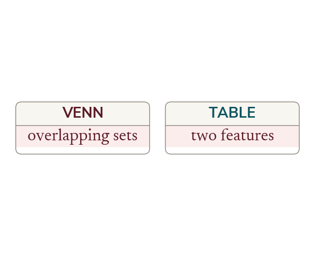

Let the structure choose
Overlapping categories with an overlap are a Venn diagram. Two characteristics at once are a two-way table. Events one after another are a tree diagram.
What decides the representation is how the information is organised, not which one was met most recently. Overlapping categories that a member can be in both of, neither of, or one only - a Venn diagram holds those, because the overlap is a place on the picture. Two separate characteristics, each of which every member has exactly one value of - year group and travel method, say - are a two-way table, because every member lands in one cell of a grid. A sequence of events happening one after another is a tree diagram. What all three share is that they account for the whole group, so their probabilities sum to